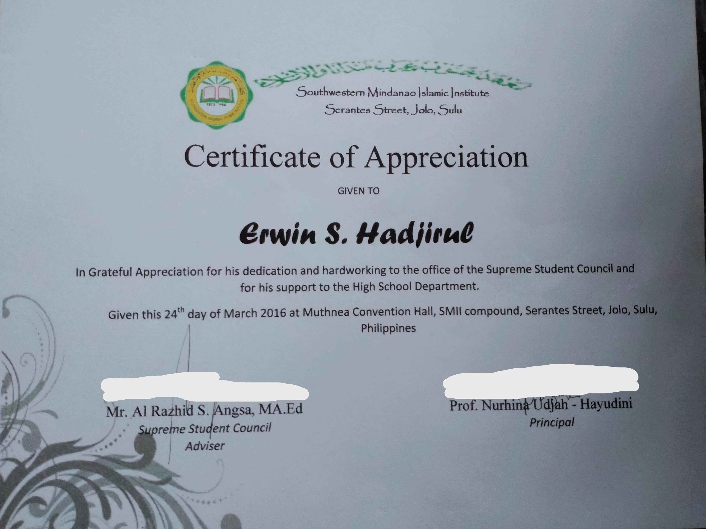

Southwestern Mindanao Islamic Institute, High School Department
The school where I started to get emotionally attached to someone
2012 – 2016

My High School Diploma
I graduated as a great student this time.
I remembered, my father used to brag to other people about me. 😌
March 24, 2016

My Certificate of Appreciation
My Certificate of Appreciation
of being Officer in Department
I had a hard time before fulfilling all the task related to being an officer
in the whole Department, but it's worth it.
March 24, 2016

News making Seminar Certification
As one of the pride of SMII before, I am required to join all of the school
external events, and this is one of those events.
May 10, 2015

My High School Photo
This is my look when I am in High School.
I used to be some kind of famous boy in school, lol.